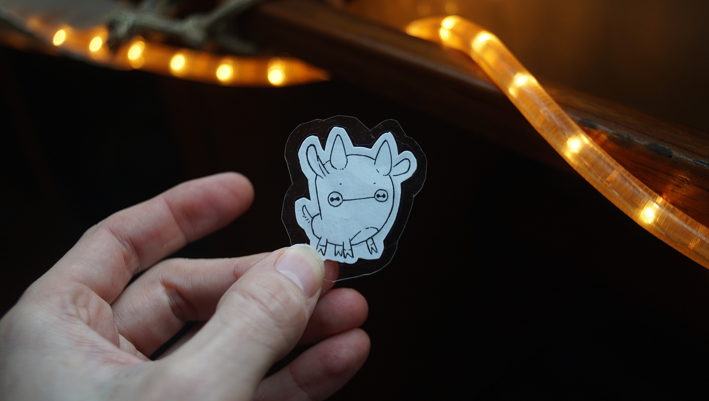
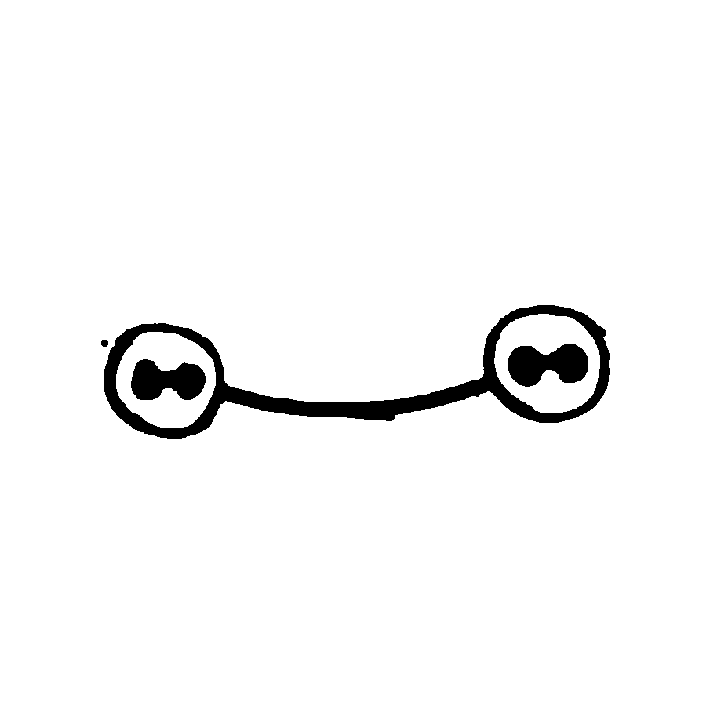
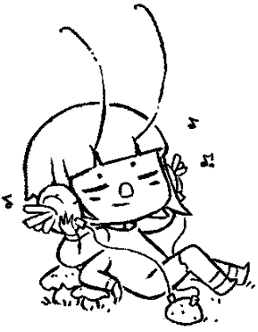
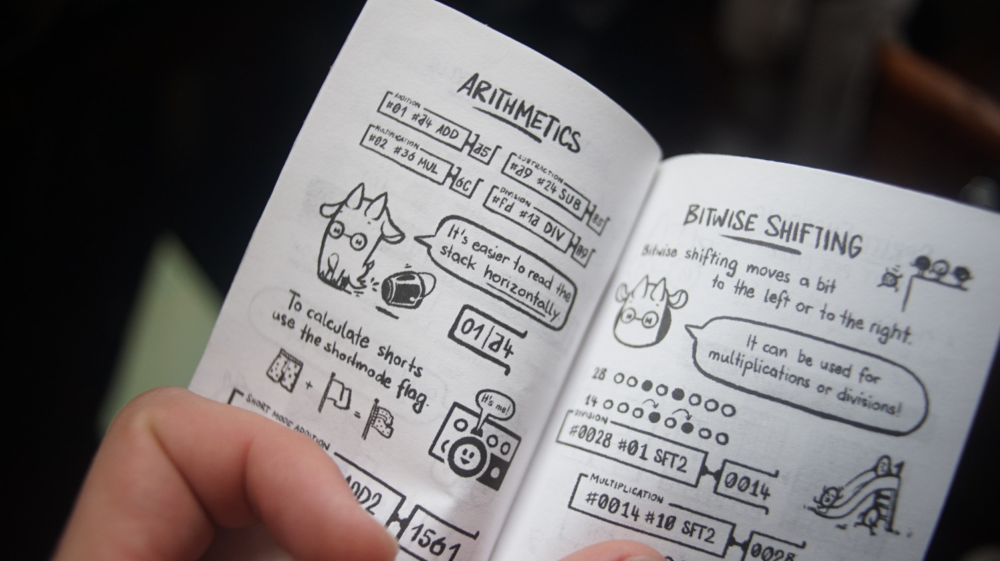
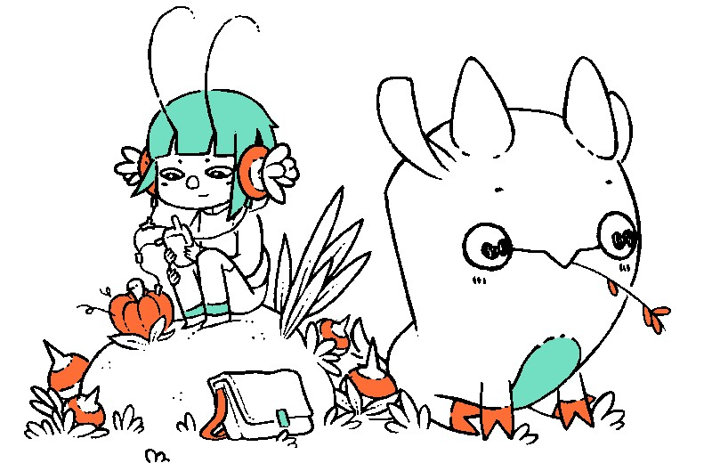

Uxn is the virtual machine living at the heart of the Hundred Rabbits ecosystem.

The virtual machine, programmable in Uxntal, is a portability layer and an attempt at crafting a comfortable amber for personal computing that is capable of hosting a variety of small interactive graphical software. It is powering this wiki.
Quick Setup
To get started, equip yourself with an assembler to convert tal source files into rom binary files, and an emulator to evaluate the rom files. The system below includes the Console device:
# Build an emulator cc uxnmin.c -o uxnmin # Build an assembler cat drifloon.rom.txt | uxnmin xh.txt > drifloon.rom # Assemble a tal file cat opctest.tal | uxnmin drifloon.rom > opctest.rom # Run a rom file uxnmin opctest.rom
Summary
See the complete definition.
P?O:M[P] P:P+1 00 P:0 a' 20 a?P:P+M[P]" P:P+2 40 P:P+M[P]" P:P+2 60 P:P+M[P]" P:P+2 .P" 80 M[P]' P:P+1 a0 M[P]" P:P+2 c0 .M[P]' P:P+1 e0 .M[P]" P:P+2 x P+:y 00|O x' P:P+y' x P+:y 20|O x" P:y" x .y 00|O x .y x .y 40|O .x y x y -- z 00|O x y -- z x y -- z 80|O x y -- x y z a 01 a+1 a 02 a b 03 b a b 04 b a a b c 05 b c a a 06 a a a b 07 a b a a b 08 a=b' a b 09 a≠b' a b 0a a>b' a b 0b a<b' a 0c P+:a a' b 0d a?P+:b a 0e P+:a .P" a 0f .a a' 10 M[a] a b' 11 M[b]:a a' 12 M[P+a] a b' 13 M[P+b]:a a" 14 M[a] a b" 15 M[b]:a a' 16 D[a] a b' 17 D[b]:a a b 18 a+b a b 19 a-b a b 1a a×b a b 1b a÷b|0 a b 1c a&b a b 1d a|b a b 1e a^b a hl' 1f a>>l<<h

- Communities: Mailing List • Forum
- Chat: #uxn on irc.libera.chat • Catlang Discord
- Original illustrations by Rekka Bellum.


17P04— Uxn is frozen at 0K.15B13— Uxn is born!
incoming: forth macintosh ufx format ulz format uxntal uxntal software varvara playdate about oscean devine lu linvega events now lie in it 2024 2023 2022 2021 hundred rabbits